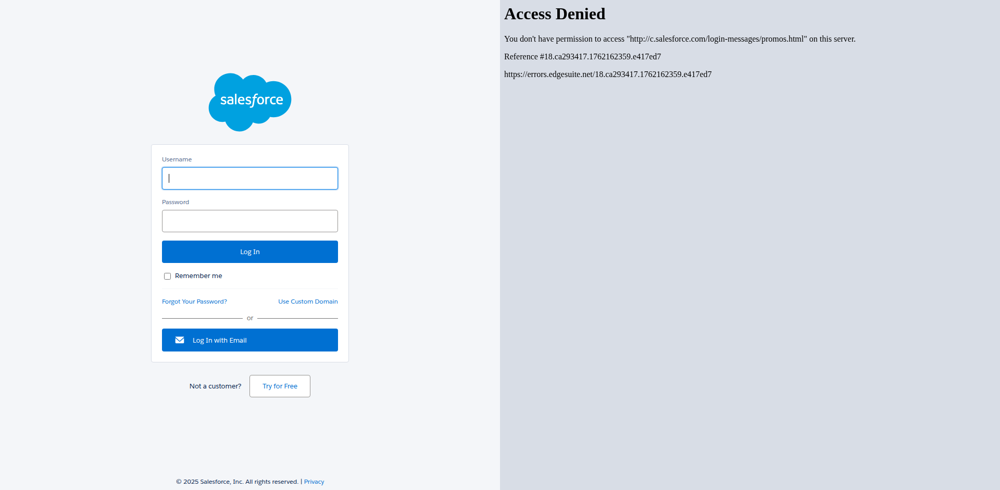

Automated Selenium Test Report
Username value used:
userexample@example.com
No.
Step
Result
Screenshot
1.
Fill value in username field.
PASS
2.
Empty value in username field.
PASS

Generated automatically by
Selenium (Java)
.